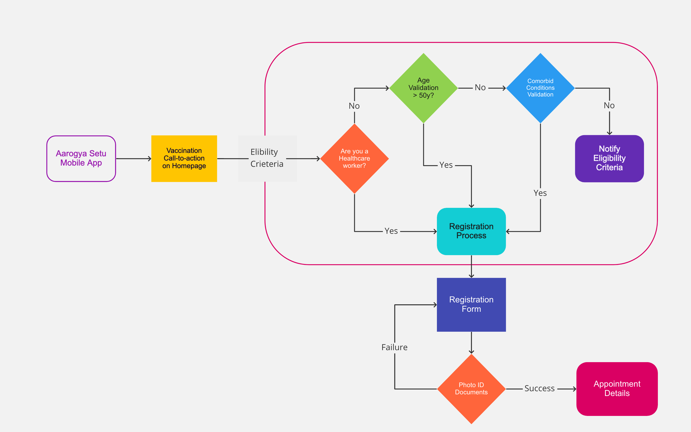
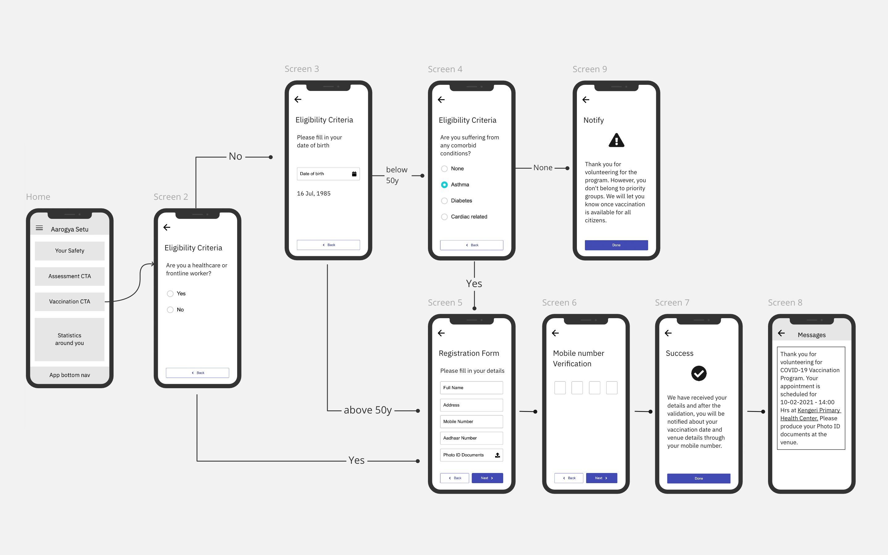
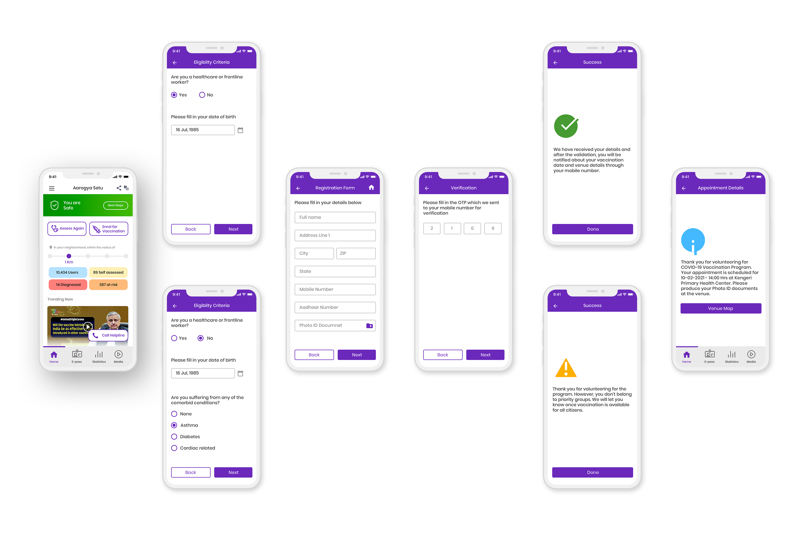

<div class="row">
    <div class="col-12 p-0">
      <div class="setu-modal">
          <div class="d-flex justify-content-evenly se-head pt-5 align-items-center">
            <p class="mt-1">Concept Design <br/>2021</p>
            <h1 class="display-1">Aarogya Setu</h1>
            <h5 class="mt-1">COVID-19 contact <br/>tracing and vaccination</h5>
          </div>
          <div class="hero d-flex">
          </div>
          <div class="p-5">
            <h3>Disclaimer</h3>
            <h5>This is purely a personal project and I'm not associated with official app.</h5>
          </div>
          <div class="p-5 d-flex">
            <div class="w-50 p-2">
              <h3>Overview </h3>
              <h5>In India, we have an official app for COVID-19 contact tracing. It's downloaded by 160 million users and it has 17 million days users.</h5>
              <br/>
              <h3>Assumptions</h3>
              <p>Government of India announced that, the COVID-19 vaccine was launched on 16th January, 2021. The first group includes healthcare and frontline workers. The second group to receive COVID-19 vaccine will be persons over 50 years of age and persons under 50 years with comorbid conditions. </p>
            </div>
            <div class="w-50 p-2">
              <h3>Opporunities</h3>
              <p>(I would rather rephrase challenges/problems to Opportunities.)</p>
              <h5 class="alert alert-info">Enable people to enrol for vaccination program through mobile apps.</h5>
              <p>So, govt guidelines simplified our target users. App is used by all age group. But, we need to filter users by their age, occupation and their pre-existing illness conditions.</p>
              <p>It's a great oppotunity for us to add "Vaccinations" feature on the mobile. Everyone is on mobile nowadays, so it would be easy and get users enrolled for the Vaccinations, rather than going personally to Health center and getting an appointments. Assuming that Govt has capacity to cater to mass population.</p>
            </div>
          </div>
          <div class="p-5">
            <h4>Eligibility Criteria</h4>
            <p>We first evaluate user's eligibility for the Vaccination Program. Should we ask them their occupation first or their age? This is good task for A/B testing.</p> 
            
            
            <div class="pt-5 role">
              <h3>User Journey</h3>
              <ul>
                <li><i class="bi-house"></i> <br/> User opens Aarogya Setu app and clicks on "Vaccination" call-to-action button.</li>
                <li><i class="bi-check2-all"></i> <br/> After the successful evaluation, user will be navigated to "Registration Form". If failed, user will be notified with necessary information about crieteria.</li>
                <li><i class="bi-input-cursor-text"></i> <br/> User needs to fill out the form, along with mandatory Photo ID documents. Mobile number has to be verified again to book the appointment. (We know user has already registered with his mobile number, to use the Aarogya Setu app in the begenning.)</li>
                <li><i class="bi-calendar2-check"></i> <br/> A success message to be shown. But, actual appointment details will be shared only through TEXT message, once docuemtns are verified and the wait period is over.</li>
              </ul>
            </div>
            <h4 class="pt-5">Wireframes</h4>
              <p>After we get eligible users, let's start with wireframes.</p>
              
          </div>
          
          <div class="solution px-5">
              <h3>Solution</h3>
              <ul>
                <li>Once we finalize on the wireframes, let's start with UI mockups. I have redesigned existing Aarogya Setu app UI (a little) to get a fresh feel.
                <hr>Tweaked "Your Status" to reflect your safety status and "Next Steps" in a single widget.</li>        
                
                <li>Moved "Assess again" button to top along with "Enrol for Vaccination" call-to-action        
                  <hr>
                  Redesigned statistics around you, to show color coded numbers with radius range.   </li> 

                <li>Moved top navigation to bottom, to follow "Thumb Zone" rule.      
                <hr>
                Consistent colors, icons to create a design language for Vaccination flow.</li> 
              </ul>
              
            
              <h4>Here is the XD Prototype</h4>
              <a href="https://xd.adobe.com/view/d9cc97cc-927c-41ef-b1b0-a008329e9503-8c9f/" target="_blank"> https://xd.adobe.com/view/d9cc97cc-927c-41ef-b1b0-a008329e9503-8c9f/</a>
              <hr>
              <div class="text-center">
                <iframe width="428" height="926" src="https://xd.adobe.com/embed/d9cc97cc-927c-41ef-b1b0-a008329e9503-8c9f/" frameborder="0" allowfullscreen></iframe>
              </div>
            </div>
            
          <div class="p-5 results">
            <h3>Takeaways </h3>
            <p>This is just a flow for "Vaccination" and not redesign of the entire app.</p>
            <p>There is always room for improvements, as this was purely designed on assumptions.</p>
          </div>
      </div>
    </div>
</div>
